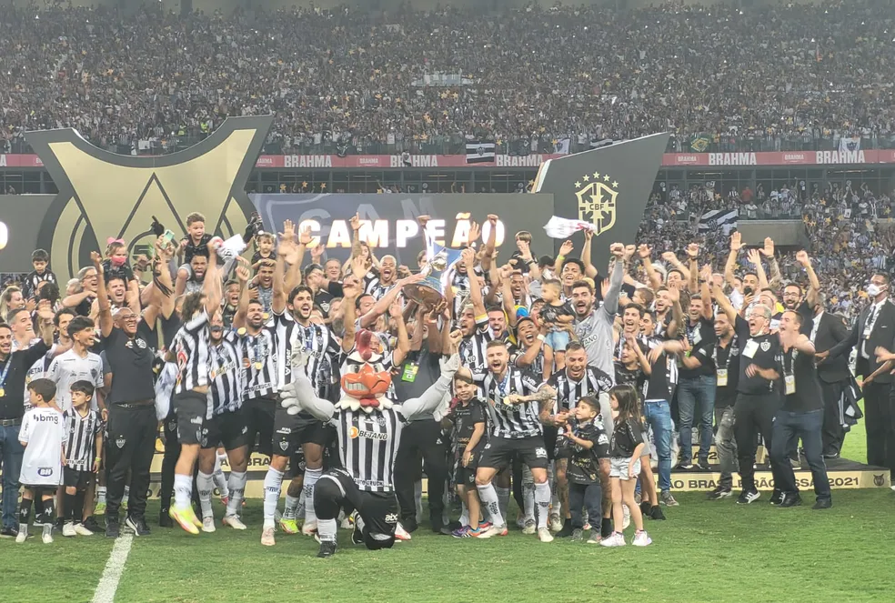

Campeonato Brasileiro de Futebol de 2021 - Série A
A Série A do Campeonato Brasileiro de Futebol de 2021, oficialmente Brasileirão Assaí – Série A 2021 por motivos de patrocínio, foi a 66.ª edição da principal divisão do futebol brasileiro. A disputa teve o mesmo regulamento dos anos anteriores, quando foi implementado o sistema de pontos corridos. Não houve pausa para a Copa América que foi realizada entre 13 de junho e 10 de julho, no Brasil (originalmente na Argentina e Colômbia), nem para os Jogos Olímpicos, no Japão, que foram realizados entre 23 de julho e 8 de agosto.
Para esta edição, a Confederação Brasileira de Futebol lançou a marca "Brasileirão Assaí 50 anos". Segundo a CBF, "o Brasileirão Assaí 50 anos marca o tempo de existência do Campeonato Brasileiro com este nome [chamado de Campeonato Nacional de Clubes pela antiga CBD], ou seja, desde 1971". Ressaltou porém que os títulos anteriores a essa data são reconhecidos como "campeonatos brasileiros".
O título foi definido com duas rodadas de antecedência, com o Atlético Mineiro sagrando-se campeão 50 anos após sua segunda conquista, ao vencer o Bahia por 3–2 de virada na Fonte Nova, em uma partida atrasada válida pela 32ª rodada. Além do campeão Atlético Mineiro, Flamengo, Fortaleza, Corinthians e Red Bull Bragantino também garantiram a vaga da fase de grupos da Copa Libertadores da América de 2022 pela classificação final no campeonato, junto com o Palmeiras, vencedor da edição de 2021. O Athletico Paranaense conquistou pela segunda vez a Copa Sul-Americana e também garantiu a presença na fase de grupos. Por fim, Fluminense e América Mineiro, sétimo e oitavo colocados, respectivamente, garantiram na fase preliminar do torneio continental.
Um ano após subir, a Chapecoense foi a primeira equipe com a queda sacramentada à Série B confirmada, sem nem mesmo entrar em campo, após a vitória do Santos contra o Red Bull Bragantino, faltando sete rodadas para o término do campeonato. Com apenas 15 pontos e uma vitória em 38 jogos, o clube catarinense fez a pior campanha da competição desde a implementação dos pontos corridos. A três rodadas do fim e prejudicado pelas vitórias de Atlético Goianiense frente ao Bahia por 2–1, em Goiânia, e pela vitória do Juventude por 1–0 contra o Red Bull Bragantino, em Caxias do Sul, o Sport foi o segundo clube rebaixado mesmo sem entrar em campo, após duas temporadas seguidas na elite e totalizando seu sexto rebaixamento para a Série B. Na última rodada os dois últimos clubes rebaixados foram conhecidos: o Bahia, ao perder para o Fortaleza por 2–1, em Fortaleza, e o Grêmio, que mesmo depois de vencer o Atlético Mineiro por 4–3 em Porto Alegre, foi prejudicado pela vitória do Juventude sobre o Corinthians (1–0), em Caxias do Sul, sacramentando seu terceiro rebaixamento na história.
Regulamento
A Série A de 2021 foi disputada por vinte clubes em dois turnos. Em cada turno, todos os clubes jogaramm entre si uma única vez. Os jogos do segundo turno foram realizados na mesma ordem do primeiro, apenas com o mando de campo invertido. Não há campeões por turnos, sendo declarado campeão brasileiro o clube que obtiver o maior número de pontos após as 38 rodadas. Ao final da competição, os seis primeiros clubes se classificam à Copa Libertadores de 2022, os seis clubes subsequentes se classificam à Copa Sul-Americana de 2022, e os quatro últimos são rebaixados para a Série B do ano seguinte. O campeão se classifica para a Supercopa do Brasil de 2022.
Introduzido em 2019, o árbitro assistente de vídeo ou VAR (do inglês Video Assistant Referee), esteve disponível em todas as 380 partidas do campeonato, tendo seus custos com tecnologia e infraestrutura pagos pela Confederação Brasileira de Futebol.
Esse foi o primeiro Campeonato Brasileiro com limite de troca de técnicos, com duas mudanças possíveis.
Critérios de desempate
Em caso de empate por pontos entre dois clubes, os critérios de desempate foram aplicados na seguinte ordem:
- Números de vitórias;
- Saldo de gols;
- Gols pró (marcados);
- Confronto direto;
- Menor números de cartões vermelhos;
- Menor números de cartões amarelos;
- Sorteio.
Estatísticas
Artilharia
| Gols | Jogador | Equipe |
|---|---|---|
| 19 | Hulk | Atlético Mineiro |
| 15 | Gilberto | Bahia |
| 14 | Michael | Flamengo |
| 13 | Ademir | América Mineiro |
Assistencias
| Total | Jogador | Equipe |
|---|---|---|
| 13 | Gustavo Scarpa | Palmeiras |
| 8 | Arthur | Red Bull Bragantino |
| 8 | Vitinho | Flamengo |